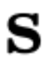
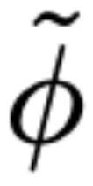
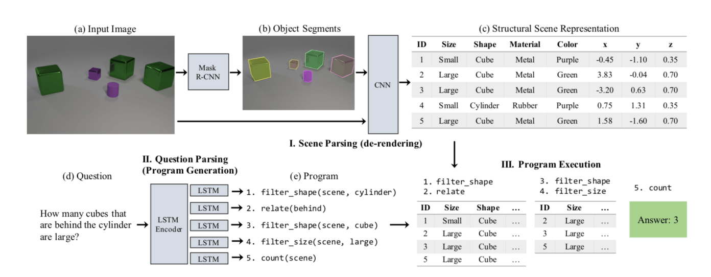

Neural-Symbolic AI Approach to Humanoid Manipulation
By Alishba Imran
Twitter | Linkedin | Email üí¨
üëã I'm Alishba, a 17-year-old who's passionate about using hardware & software to tackle problems in deep tech.
I've been working with Hanson Robotics (creators of Sophia the robot) to develop various deep learning techniques as a new way to automate manipulation tasks in humanoids/robots like Sophia. We're developing neural networks, for closed-loop grasping to ultimately develop neural symbolic AI approaches that improve our understanding and ability to grab novel objects in unstructured environments.
Robotic Perception
Before we get into the specifics, let's go over some of the key components in robotic perception. Robotic perception is the ability of robots to learn from sensory data and, based on learned models, to react and take decisions accordingly. It consists of three components: 1. perceive 2. comprehend and 3. reason about the surrounding environment
Key modules of a typical robotic perception system are: sensory data processing (focusing here on visual and range perception); data representations specific for the tasks at hand; algorithms for data analysis and interpretation (using AI/ML methods); and planning and execution of actions for robot-environment interaction.

Sensor-based environment representation/mapping
Data from sensors are super key in robotic perception and it can come from a single or multiple sensors, usually mounted onboard the robot or from external cameras mounted on.
Sensor-based environment mapping includes the acquisition of a metric model and its semantic interpretation. This semantic mapping process includes reasoning on volumetric occupancy and occlusions, or identifying, describing objects to enable reasoning and inference regarding the real-world environment where the robot operates.
Grasping Task
Robotic grasping is one of the most fundamental robotic manipulation tasks: before interacting with objects in the world, a robot starts by grasping them.
In order to do this, the robot has to work through many things such as (but not limited to):
- Inverse Kinematics. Based on the desired location for the tip of the robotic arm, what should the angles of the joints be so that you can move the arm to the desired location.
- Grasping position. Identifying where to best grab the object. If this is done on a hand, then we also need to consider orientation of the hand for the grab.
- Sensing. This includes sensing where the object is, how far it is from the robot (depth) and information about the surrounding environment.
These tasks are difficult today for two main reasons:
- Performing grasping and manipulation tasks in unstructured environments require computing grasps for the almost unlimited number of objects it might encounter.
- The robot must be able to act in dynamic environments, whether that be noise and errors in perception, inaccuracies in the robot’s control, or perturbations to the robot itself.
This is where using computer vision or CNN approaches come in handy.
Neural Network: GG-CNN
The algorithm that I used for grasping detection is a Generative Grasping Convolutional Neural Network (GG-CNN) widely inspired by this paper. A GG-CNN works by taking in depth images of objects and predicting the pose of grasps at every pixel for different grasping tasks and objects.
Why CNN?
CNN-based controllers for grasping are preferred since they can do closed-loop grasping. Both systems learn controllers which map potential control commands to the expected quality of or distance to a grasp after execution of the control, requiring many potential commands to be sampled at each time step.
Status Quo:
- Currently classifying grasp candidates are sampled from an image or point cloud, then are ranked individually using a CNN. Once the best grasp candidate is determined, a robot executes the grasp open-loop (without any feedback).
- It’s not the best: This requires precise calibration between the camera and the robot, precise control of the robot and a completely static environment. This can also take a long time and lots of computation to run in real-time.
- GG-CNN is better: Using this we can directly generate grasp poses for every pixel in an image simultaneously, in a closed-loop manner which also uses a comparatively small neural network.
What is GG-CNN?
- Takes in real-time depth images and identifies objects through object detection.
- Parameterised as a grasp quality, angle and gripper width which is done for every pixel in the input image in a fraction of a second.
- The best grasp is calculated and a velocity command (v) is issued to the robot.
Benefits:
- Less compute since less parameters are used.
- Grasping task is done pixel by pixel which is faster and more accurate.
- Closed-loop (takes in feedback from the previous batch to improve overtime). Contains visual servoing which are able to adapt to dynamic environments and do not necessarily require fully accurate camera calibration or position control.
Grasping Pose
Grasp is executed perpendicular to a plane surface, given a depth image of the scene which is determined by its pose (such as the grippers centre position based on x,y,z values in Cartesian coordinates). The grippers rotation around the z axis and the required gripper width. A scalar value is also used to represent the chances of grasp success in the pose.
A grasp can be described as:
-  = (u, v) which is the centre point in pixels.
-  is the rotation in the camera’s reference frame.
 is is the grasp width in pixels.
is is the grasp width in pixels.
A grasp in the image space  can be converted to a grasp in world coordinates
by transforming it with the following:
can be converted to a grasp in world coordinates
by transforming it with the following:
- transforms from the camera frame to the world/robot frame.
- transforms from 2D image coordinates to the 3D camera frame, based on the camera's parameters and defined calibration between the robot and camera.
Grasp Representation: represents a grasp map (G) as a set of three images, Q, Φ and W:
- Q is an image that describes the quality of a grasp executed at each point (u, v). The value is a scalar in the range [0, 1] where a value closer to 1 indicates higher grasp quality.
- Φ is an image that describes the angle of a grasp to be executed at each point. The angles are given in the range [−π/2, π/2].
- W is an image that describes the gripper width of a grasp to be executed at each point. To allow for depth invariance, values are in the range of [0, 150] pixels, which can be converted to a physical measurement using the depth camera parameters and measured depth, and the gripper used.
Dataset: Cornell Grasping
To train our network, I used the Cornell Grasping Dataset which contains 885 RGB-D images of real objects, with 5110 human-labelled positive and 2909 negative grasps. This dataset is good for our task because it has a pixelwise grasp representation as multiple labelled grasps.

Depth and RGB images from the Cornell Grasping Dataset with the ground-truth positive grasp rectangles are shown in green. From the ground-truth grasps, the Grasp Quality (QT), Grasp Angle (ΦT) and Grasp Width (WT) images are generated to train the network. The angle is further decomposed into cos(2ΦT ) and sin(2ΦT ) for training.
Summary of Model:
- The GG-CNN takes in a depth image.
- It directly generates a grasp pose for every pixel comprising of the grasp quality, grasp width and grasp angle.
- From the combined network output, we can compute the best grasp point to reach for the object.
Results:
I've finished training the model and testing/validating it. Based on current tests, the model is able to get a 83% grasp success rate on a set of previously unseen objects and 88% on a set of household objects that are moved during the grasp attempt and 81% accuracy when grasping in dynamic clutter. Overtime, I'll be working to train the model more with new data to increase the accuracy.
Other Approaches: Reinforcement Learning & Imitation Learning
Reinforcement Learning (RL) figures out what to do and how to map situations to actions. The end result is to maximize the numerical reward signal but instead of telling the learner what action to take, they must discover which action will result in the maximum reward. In our case, the action would be grasping an object with a high success rate.
Using RL, we can get an agent to learn the optimal policy for performing a sequential decision without complete knowledge of the environment. The agent first explores the environment by taking action and then edits the policy according to the reward function to maximize the reward. To train the agent, we can use:
- Deep Deterministic Policy Gradient (DDPG). A model-free off-policy algorithm for learning continous actions.
- Trust Region Policy Optimization (TRPO). Policy Gradient methods (PG) are commonly used and at a high level use gradient ascent to follow policies with the steepest increase in rewards. This is not very accurate for curved areas though and that is why TRPO are effective for optimizing large nonlinear policies.
- Proximal Policy Optimization (PPO). At a very high level, PPO have some of the benefits of TRPO but are much simpler to implement and tune.
To learn more about these, you can read this paper which testing all of these in a simulated environment and compared the results.
Key Terms to note here are:
- Environment: the pysical world in which the agent works
- State: Current 'status' of the agent
- Policy: Method to map agent’s state to actions
- Value:The reward that an agent would receive if they take an action in a particular state
Some of the key limitations to RL right now is that it's very hard to find the most optimal reward function and setting up a grasping experiment in real life is hard. For this reason, most implementations of this have been done via simulation but results might not translate as well in real life.
Examples of simulations are as such:
The robot must pick up objects in a bin, which is populated using randomized objects and then generalize to unseen test objects or pick up a specific object from a cluttered bin.
To overcome of these barriers, we could also use Imitation learning where the learner tries to mimic an experts action in order to achieve the best performance. This is easier to faciliate since a human can do the actions and the model can learn based on that overtime. We can use the DAgger algorithm to accomplish these tasks. I'll be going into more details about these in a future blog post.
Neuro-Symbolic AI
The neural network would just be part of the entire system, as in the long-term the goal is to integrate it with symbolic reasoning techniques such as rules engines or expert systems or knowledge graphs. This is often referred to as Nero-Symbolic AI. Examples of this can be using neural networks to identify what kind of shape or colour a particular object has and then applying symbolic reasoning to identify other properties such as the area of the object, volume and so on.
Why should we combine neural networks with symbolic reasoning?
Current deep learning models are too narrow. When you give them huge amounts of data, they work very well at the task you want it to perform but break down if you prompt it to adapt to a more general task. To do this you also need enormous amounts of data. On the other hand, symbolic AI is really good at doing interesting things with symbols but actually getting the symbols from the real world is much harder than anticipated.
By combining the two approaches, you end up with a system that has neural pattern recognition allowing it to see, while the symbolic part allows the system to logically reason about symbols, objects, and the relationships between them.
Here's an example of how Neuro-Symbolic AI works:
- A neural network for object detection can be used to map from inputs (like an image of an apple) to output (like the label “apple”).
- Symbolic AI is different since it would instead express all the knowledge we have about apples: an apple has parts (a stem and a body), it has properties like its color, it has an origin (it comes from an apple tree), and so on.
- Combining these two approaches will allow you to still detect the object but draw more insights about the object, the environment it's in and it's interactions.
MIT-IBM CLEVRER
CLEVR is one of the first datasets using neuro-symbolic ai that provides a set of images that contain multiple solid objects and poses questions about the content and the relationships of those objects (visual questioning). If you want to train a neural network to solve a system like that, you might be able to do it but it requires tremendous amounts of data.
To solve this, they first use a CNN to process the image and create a list of objects and their characteristics such as color, location and size. These are types of symbolic representation that rule-based AI models can be used on. Another NLP algorithm processes the question and parses it into a list of classical programming functions that can be run on the objects list. The result is a rule-based program that expresses and solves the problem in symbolic AI terms. The AI model is trained with reinforcement learning through trial and error based on the rules of the environment it is operating in.
To learn more about this, you can read this blog.
How could we do this for grasping?
We can create a map of different applications and capabilities through affordances. Affordances include the perceived and actual properties of a thing that provide cues to the operation of things. Affordances can be symbolic representations used to complete a task. Combining these capabilities with neural network which can make a prediction for grasping and turn that into symbolic representation that can be reasoned with through calling functions.
Next Steps
Over the next few weeks I'll be working on the following to progress this project forward:
- Test out current gg-cnn model with ROS implementation on robotic arm.
- Generate my own dataset for applications that Sophia will be tested on.
- Create model for multi-finger grasp.
- Going deeper into Neural-Symbolic AI and framing how we can use this technique for manipulation tasks such as grasping.
- Integrate model into Hanson Robotics simulation environment to test out model on Sophia. Eventually, the goal is to use the model alongside existing systems that are based on symbolic representations.
Thanks for reading! For any questions or feedback you can reach me:
Twitter | Linkedin | Email üí¨
If you enjoyed this blog, please do share it: